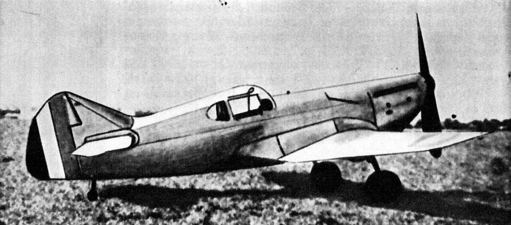

D.520 operations · 1940–1945
The D.520 entered combat during the Battle of France as a genuinely modern French fighter, armed with a 20 mm cannon firing through the propeller hub and four wing machine guns. It then had a complicated post-armistice career with Vichy France, Free French units, Bulgaria, Italy and captured evaluation routes. A good D.520 build starts with the operator and date: Battle of France, Vichy Syria/North Africa, Free French, Bulgarian service or museum/reference aircraft.

Role & strengths
- French single-seat fighter with Hispano-Suiza inline engine
- Battle of France, Vichy, Free French, Bulgarian, Italian and captured routes
- Hub-firing 20 mm cannon, wing guns, slim fuselage and tricolour rudder markings
- French brown/green/grey disruptive camouflage, light blue-grey undersides and Vichy theatre markings
- Restrained 1940 wear, dust, exhaust staining, panel fading and operator-specific repaint/weathering
Key theatres
- Battle of France / Groupe de Chasse route
- Vichy Syria and North Africa route
- Free French and captured/operator routes
- Bulgarian and Italian service options
Specification D.520
Survivor/reference today

D.520 survivors and restorations are useful for cockpit, radiator, landing gear, spinner and panel layout, but always verify wartime colours and markings separately.
View referencesTimeline highlights
Build this D.520 as…
Pick the operator first. Battle of France, Vichy, Free French, Bulgarian and captured routes all need different markings and weathering.
Aircraft identity
D.520 markings changed dramatically by operator. Do not mix Battle of France roundels with Vichy red/yellow theatre bands or Bulgarian markings.
French camouflage has soft disruptive shapes and specific underside tones. Avoid generic Allied or captured colours.
Paint scheme cards
Battle of France route with tricolour rudder and French roundels.
Vichy route with highly visible theatre bands and aircraft-specific markings.
Operator-specific route where markings drive the whole build.
Weather exhausts, radiator, wing roots, tyres and underside grime separately.
Campaign cards
Classic 1940 route with French camouflage, tricolour rudder and GC markings.
Syria/North Africa route with red/yellow markings and different weathering context.
Later Allied route with specific aircraft/operator marking checks.
Bulgarian, Italian and captured routes with non-standard markings.
Build difficulty and related guides
Medium. Clean fighter shape, but camouflage and markings need accuracy.
High. Operator/date matters more than usual on the D.520.
Medium. Restraint is better than heavy chipping for most 1940 subjects.
Dewoitine D.520 units and operators
Sortable D.520 cards covering Battle of France, Vichy, Free French, Bulgarian/Axis, captured and survivor/reference routes.
D.520 operating map
Airfield info
Click a marker to show linked D.520 unit cards and modelling notes.
Campaign timeline
Survivors
Books and reference sources
D.520 build guide
D.520 videos, photos and archive material
Media replaces the old separate walkaround tab: cockpit, exhaust, undercarriage, markings, survivor references, archive imagery and video cards are grouped here.